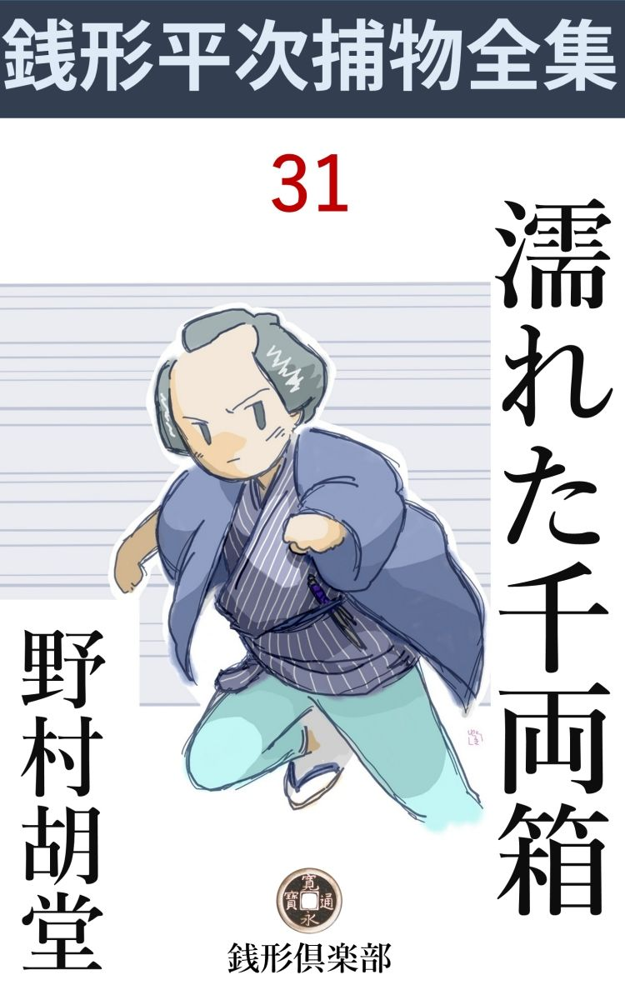
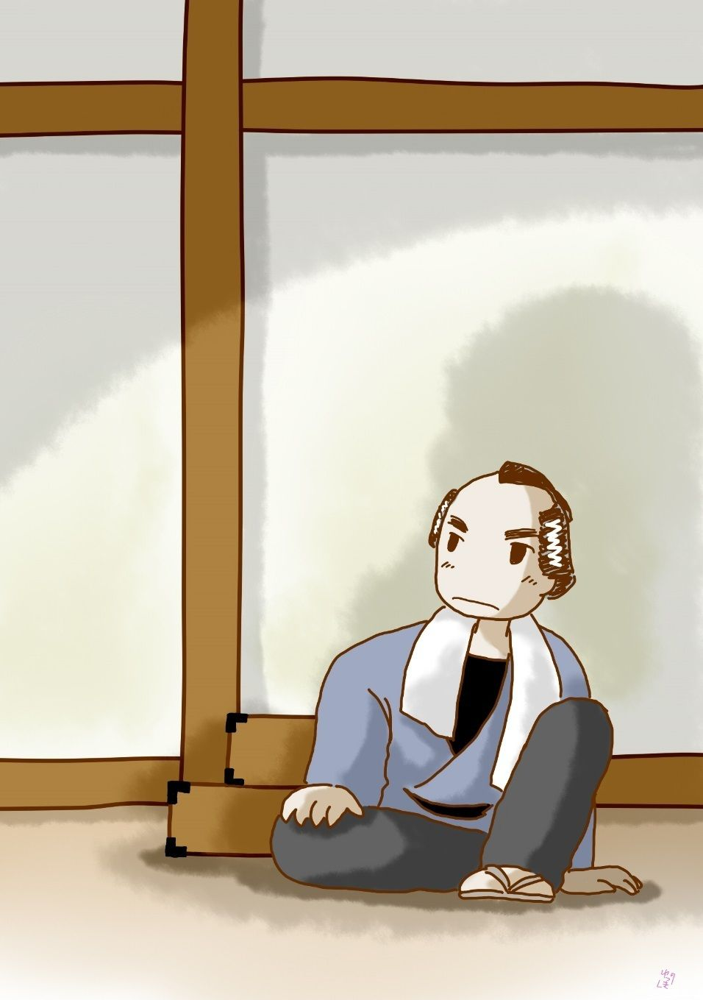

| 濡れた千両箱: 銭形平次捕物全集第31話 (銭形倶楽部) | |
| 野村胡堂 | |
| ZENIGATA CLUB (2018) | |

一
深川の材木問屋春木屋の主人治兵衛が、死んだ女房の追 善 に、檀 那 寺 なる谷中の清養寺の本堂を修理し、その費用三千両を吊台に載 せて、木場から谷中まで送ることになりました。
三千両の小判は三つの千両箱に詰められ、主人治兵衛の手で封 印 を施 し、番頭の源助と鳶頭 の辰蔵が宰領 で、手代りの人足共総勢六人、柳橋に掛ったのは丁度昼時分でした。
「悪い雲が出て来たね、鳶頭 、この辺で夕立に降り込められるより、一と思いに伸 しちゃどうだろう」
番頭の源助はそう言いながら、額の汗を拭き拭き、お通の水茶屋の前に立ちました。
「この空模様じゃ筋違 までも保 ちませんぜ。お通は仕度をしている筈ですから、ともかく晴らしてから出かけましょう」
辰蔵は吊台を担 いだ人足を顎で招くように、お通の茶屋の暖 簾 をかき上げました。
同時に、ピカリ、と凄まじい稲光り、灰色に沈んだ町の家 並 が、カッと明るくなると、乾ききった雷 鳴 が、ガラガラガラッと頭の上を渡ります。
「あれッ」
界隈で評判の美しいお通は、------いらっしゃい------と言う代りに、思わず悲鳴をあげてしまいました。赤前垂、片 襷 、お盆を眼庇 に、怯 え切った眼の初々 しさも十 九 より上ではないでしょう。
丁度その時、------
「喧嘩だッ」
「引っこ抜いたぞ」
「危ないッ、退 いた退いた」
「わッ」
という騒ぎ。両国広小路の人混みの中に渦 を巻いた喧嘩の輪が、雪崩 を打って柳橋の方へ砕 けて来たのでした。
「どうした、鳶頭 」
「喧嘩ですよ、浪人と遊び人で」
「荷物が大事だ、中へ入れろ」
「へエ------」
葭簾張 の水茶屋で、喧嘩にも夕立にも、閉める戸がありません。三千両の吊 台 はそのまま土間を通って磨き抜いた茶釜の後ろ、------ほんの三畳ばかりの茣 蓙 の上に持込まれました。前から予告があって、時分時には春木屋の荷物が休むことになっていたので、お通も、お通の母親も、これは文句がありません。
もっとも吊台を担ぎ込んだ一と間は、直ぐ神田川の河岸っぷちで、開け放した窓から往き交う船も見えようという寸法ですから、涼みにはまことに結構ですが、物を隠すにはあまり上等の場所ではありません。
鳶頭の辰蔵は、吊台の上に掛けた油 単 を引っ張って、一生懸命、千両箱を隠すと、番頭の源助はその前に立ち塞 って、精一杯外から見通されるのを防ぎました。
続いて、もう一と打、二た打、すさまじい稲光りが走ると、はためく大雷鳴、耳を覆 う間もなく篠 突 くような大夕立になりました。
向う側の家並も見えないような雨足に叩かれて、ムッと立ち昇る土の香、------近頃の東京と違って電気事業も避 雷 針 もない江戸時代には、びっくりするような大夕立が時々あったと言うことです。
まだ六月になったばかり、暑さは例年にないと言われましたが、それにしても、真昼の大夕立は滅多にないことでした。
お蔭で素っ破抜きに始まった大喧嘩も流れて、夥 しい弥次馬は、蜘 蛛 の子を散らすように、近 間 の店先に飛込んでしまいました。
お通の茶店へも十二三人、濡鼠 のようなのが飛込みましたが、買切ったわけでもないのですから、源助苦い顔をしながら断るわけにも行きません。
「おッ、何て自 棄 な降りだい、まるで川の中を歩いているようだぜ」
「まア、松さん」
ポンと飛び込んで来たのは、舞台で本雨を浴びて来たような意気な兄イ、濡れた単 衣 をクルクルと脱ぐと、
「ほら、ざっと絞 って乾かして置いてくんな、------心配するなってことよ、そんな腐 った単衣なんざ、お邸へ帰りゃ何枚でもあらア」
無雑作に投り出して、切り立ての犢鼻褌 に、紺の香が匂う腹 掛 のまま、もう一度ドシャ降りの中へ颯 と飛び出しました。
「まア、裸でどこへ行くつもりなのさ、松さん」
お通は追っ掛け、戸口まで出ましたが、もう男の姿はその辺に見えません。また一としきり、ぶり返した大降り、光る、鳴るの伴 奏 で、暫くは面 も向けられません。
二
その晩、清養寺の庫裡 に置いた千両箱が三つ、煙の如く消え失せてしまったのです。
寺の境内に起ったことは、寺社奉行の支配で、町方は関係しないのが普通ですが、揉 事 や公 事 沙汰と違って、人殺しや泥坊となると、寺社奉行の馴れない手先では始末におえません。
そこで、早速町方へ渡りがついて、与力笹野新三郎が係りとなり、谷中から浅草一帯を縄張にしている、三輪 の万七を現場に走らせましたが、それだけではどうも気になってなりません。
「平次」
「ヘエ、御呼びで」
丁度八丁堀の役宅へ顔を出した、銭形平次が呼び出されました。
「寺社から頼まれて、万一手落ちがあっては町方の恥だ、御苦労だがお前も行ってくれ」
「へエ------」
平次は凡 そ腑 に落ちない顔を見せます。
「不服か、平次」
「飛んでもない、旦那、御申付けに反 く平次じゃ御座いませんが、それでは三輪の兄 哥 の顔が潰 れます」
「町方一統、------引いては御奉行の顔が潰れても構わぬと言うのか」
「ヘエ、恐れ入りました、------それでは潮時を見て出て参りますが、万七兄哥の顔も立ててやるように、差向き八五郎をやって下さいまし、あれなら三輪のも腹を立てません」
「八五郎で大丈夫か」
「あの野郎は馬鹿みたいな顔をしておりますが、あれで、なかなか好いとこが御座います。万事は私が後楯 になって糸を引いてやります」
「それじゃ、八五郎を呼べ」
笹野新三郎の声に応じて、敷居 の外からヌッと長 んがい顔を出しました。
「旦那、ここにおります、ヘッヘッ」
「何だ。そんな所にいたのか、ヘッヘッ------て挨拶はないぜ」
と平次。
「でもね、親分、------馬鹿みたいな顔------はひどいでしょう」
「何だ、聞いていたのか」
「ヘエ、------」
「見掛けよりは悧口だって言ったんだから、礼を言って貰いたい位のものだ。旦那のお話を聞いてたんなら、改めて取次ぐまでもあるめえ。谷中の清養寺に飛んで行ってみな」
「ヘエ」
「昨夜 千両箱の張番をした人間より、千両箱を拝んで、宵のうちに帰った人間を調べるんだよ」
「成程ね、さすがは銭形の親分だ、眼のつけどころが違う」
「褒められたって奢 りもどうもしないよ、ドジを踏むな」
平次は相変らず子分思いの癖 にポンポン言います。
「ところで、親分」
「何だ、まだ言い遺 すことがあるのか」
「三輪の万七親分の鼻を明かしても構わないでしょうね」
ガラッ八は少し顎を突き出して、長い舌でペロリと上唇 を嘗 めました。
「馬鹿野郎、撲 り倒されない用心をしろ、旦那が笑っていらっしゃるじゃないか」
「ヘッ、ヘッ、それじゃ行って参ります」
ガラッ八は笹野新三郎の前を滑ると、八丁堀から谷中まで、尻をからげて宙 を飛びます。
三
「おや八兄哥、大層好い鼻じゃないか」
三輪の万七とその子分のお神楽 の清吉、朝っから調べ疲れて、見当もつかずにいるところへ八五郎を迎えて、苦々しいとは思いながらも、何となくホッとした様子です。
「三輪の親分、当りはつきましたかい」
「いや、まだついたという程ではねえ」
「笹野の旦那が------寺社御奉行のお頼みだから、三輪のも精一杯の働きを見せるだろう、やい八五郎鼻毛なんぞ抜いてる暇 があるなら、谷中へ行って万七親分の仕事振りを見習って来い、好い修業になるぞッ------ってね、ヘッヘッ」
八五郎にしては一生一代のお世辞です、もっとも八丁堀から谷中まで考えて来たんで、これ位の事が言えたのでしょう。
「そうかい、まだたいした働きも仕事もしたわけじゃねえ、まア、見てくれ」
万七も悪い心持はしなかったでしょう、ツイ先に立って庫 裡 へ入ると、調ベ口の復 習 をするように八五郎に話してくれました。
「柳橋で大夕立に逢ったので、千両箱の吊台が寺の門を潜 ったのは申刻 下り、そのまま役僧の手で受け取って、住職、寄進主立会の上、封印を切って調べる筈だったが、法 用 で出かけた住職も、深川から来る筈の治兵衛も、夕立に降り込められて、陽のあるうちに間に合い兼ねた。夜分千両箱を三つも置くのは物騒だし、身体の弱い治兵衛は到頭来なかったので、庫 裡 ヘ一と晩泊めることになったが、それが悪かった」
「ヘエ------」
「夜中過ぎまでは確 かにあったというが、番人がウトウトする間に、三つとも綺麗にやられた。気のついたのは寅刻 （午前四時）少し前、それから大騒動になったが、庫 裡 の潜戸 を外からコジ開けてあったから、泥坊は外から入ったに違げえねえ」
「------」
「寝ずの番をしていた鳶頭 の辰蔵が、頸 を縊 るといって騒いだが、それは止めた」
「寝ずの番は鳶頭一人ですか」
「寺男と小坊主が二人、時々顔を出したが、それも宵のうちだけで、子 刻 （十二時）過ぎは辰蔵一人になった」
「すると、宵に顔を見せて、千両箱を眺めるか触 るかしたのは、その寺男と小坊主が二人というわけですね、親分」
ガラッ八は宵に帰った人間に眼をつけろと言った平次の言葉を思い出したのです。

「八兄哥 、------一応その三人が怪しいと思うのはもっともだが、寺男の弥十はこの寺に四十年も勤めている忠義者で取って七十一だぜ、小坊主は十三と十一、まだろくに味噌も摺 れねえ」
「それでも、親分の前だが、手引きは出来ましょう」
「手引きがあるなら、あんな岩乗 な潜戸 を、外から外 すような不器用なことはしねえよ」
万七は少しムッとした様子です。
「だが、三輪の親分、外から入るなら、何もあんなに骨を折って、念入りに岩乗な潜戸 などを外 すまでもなかったでしょう。寺方だから本堂の方にはろくな締りもねえ、少し窓は高いが、這い上って廊下伝いに、杉戸一枚を開けさえすれば、すぐ庫 裡 じゃありませんか」
ガラッ八の明察、万七は少したじろぎました。
「大層目先が見えるようになったんだね、八兄哥」
「ヘッ、それほどでもねえ」
「馬鹿なッ」
大舌打を一つ、この法外な自 惚 男をさげすむように、万七と清吉は顔を見合せました。
「他に宵に帰ったのはありませんか、親分」
「千両箱の吊 台 を担 いで来た人足は、陽 のあるうちに、番頭の伝助と一緒に深川へ引取った。住職は大夕立に降り込められて、目黒の檀 家 から帰ったのは薄暗くなる頃、------それから、途中から帰ったのが怪しいと言うなら、もう一人あるよ。寛永寺の役僧は、三千両の寄進に立ち会う筈で、昼過ぎから寺に来ていなすったが、引渡しが翌る日と決って、これも夕方引揚げなすったそうだ、------宵 じゃねえが八兄哥に言わせると、これも怪しいんだろう、行って訊いてみな」
「へッ」
八五郎一ぺんに悄気 てしまいました。河内山の芝居でも解る通り、寛永寺の役僧は見識のあったもので、町方の御用聞などは、指も差せるものではありません。
四
万七と清吉とガラッ八は、もう一度寺の中を隈 なく見て廻りました。庫 裡 の八畳の床の問には、濡れた千両箱を三つ置いて、少し汚 点 になった跡が今でも判りますが、押入れにも、納戸にも、床下にも、天井裏にも、須 弥 壇 の下にも、位 牌 堂 にも、竃 の下にも、千両箱などは影も形もありません。小さいものと違って、かなり大きい上、一つ一つの重さが五六貫もあるのですから、これだけ捜してなければ、先ず寺内にはないものと思わなければなりません。
「ないね、三輪の親分」
とガラッ八。
「俺は二た時も前から三度も寺内を捜したんだぜ。ないことはとうに判っているよ。泥棒が内にいるものなら、千両箱を三つも持ち出した上、御丁寧に外から潜戸 をこじ開けて入って、知らん顔をしていたことになるぜ、八兄哥」
万七の言うのはもっともでした。
それから寺内の人を一人一人呼び出して貰って逢いましたが、三千両の大金を盗み出しそうなのは一人もありません。
住職は六十を越した老僧で、末寺 ながら上野では幅の利けた高徳、外に寺男の弥十老人と、小坊主が二人、それに檀 家 から預っているお類という年増女が一人、------年増というとあだっぽく聞えますが、唐 臼 を踏 むような大 跛足 で、渋紙色の顔には、左の頬から鬢 へかけて、大 焼痕 の引っつりがある上、髪は玉 蜀 黍 の毛ような女------、年こそ三十前後ですが、これは又あまりに痛々しい不 容貌 です。
「厚木在から来ているということだが、飯を炊 くより外に能 のない女だ、当って見るがいい」
「当るのは構わねえが、惚れられでもすると大変だぜ、八兄哥」
お神楽 の清吉は横合から嘴 を入れました。
八五郎も一応はこの飯炊女を疑いましたが、不具で不 容貌 で、その上小柄で、ボロ切れのような見る影もない姿を見せつけられると、つまみ喰い以上の悪事などは出来そうにも思われません。
「何時からここにいるんだ」
「この三月の出代りからだアよ」
間違いもない相模 訛 り、少し眼脂 が溜って、傍へ寄るとプーンと匂いそうです。
「桂庵 は？」
「そんなものは知らねえだよ」
どうも少し日当りの悪い人間らしくも見えます。それに五六貫目の千両箱を三つ、あっという間に持出すにしては、この女は少し弱過ぎるでしょう。
「もういいよ、向うへ行って猫の子とでも遊んできな。八兄哥、外廻りを見るか」
万七は先に立って、寺の外廻りをグルリと一廻りしました。
「おや」
ガラッ八は寺の後ろの墓地------取っつきにある、新仏の土饅頭 の前へ立止りました。
「どうしたい、八兄哥」
と追っ駈けるように清吉。
「塔婆 が裏返しだぜ」
「成程、子供の悪戯 だろう」
向うを向いている塔婆を引っこ抜いて、万七は土饅頭の上に正面を向けて立ててやりました。
「昨日は住職がいなかったんだね」
「そうだよ、目黒へ御用で行って薄暗くなる頃帰った」
「すると、この墓は早くて一昨日 葬 ったんだが、昨日の大夕立の後で、又掘り返していますぜ」
「な、何だと」
ガラッ八は大変な事に気がつきました。
「塔婆の戒名 で見ると子供のようだが、それにしちゃ土饅頭が大き過ぎはしませんかね、親分」
ここまで聞くと、さすがに万七は老巧な御用聞でした。庫 裡 へ駆け込んで住職を引っ張り出すと、渋るのを無理に口 説 き落して、お神楽 の清吉を寺社奉行役宅まで走らせました。新墓を掘り返す権力などは、寺も、遺族も、町方も持ってはいません。
手続に暇取って、役人立会の上墓を発 いたのはその日の夕方、予期の通り千両箱が三つ、大して深くないところから現われた時は、ガラッ八は言うに及ばず、万七も清吉も思わず喊声 をあげました。
幸い来合せた寄進主の春木屋治兵衛、住職と談合の上、寛永寺の役僧と、寺社奉行から出張の同心立会の上、三つの千両箱は本堂に移され、治兵衛の手で封 を切ることになりました。
「治兵衛、封に間違いはあるまいな」
と万七はさすがに黙ってはおられません。
「何分土の中に埋められて、傷んでおりますから、確かな事は申されませんが、店で拵えさせた封に間違いはないようで御座います」
治兵衛はそう言いながら、封を切って一番上の千両箱を開きました。
「あッ」
中は砂利 と古 金屑 、------山吹色の小判などは一枚もありません。
続いて第二、第三の千両箱が開けられました。が、いずれも同じことで、中味は綺麗にすり代えられ、砂利と金物の屑を詰めて、巧 みに貫々を誤 魔 化 しただけの事です。
「------」
並居る手先、役人、悟 りすました住職や役僧も、暫くは口も利けません。
「八兄哥、たいした手柄だ」
万七は一番先にこう言いました。危うく何もかも八五郎の手柄になるところを、千両箱の中味が砂利や金屑で、却 ってホッとしたのでしょう。
「飛んだ花咲爺さ、ここ掘れワンワンと来やがったろう、ヘッヘッヘッ」
下司な笑いは、お神楽の清吉の歪 んだ唇から、ガラッ八の開いた口ヘ、覿 面 に叩きつけられたのです。
五
「親分、こう言ったわけだ。三輪の親分に白 痴 扱いにされても腹は立たねえが、親分の事まで何とか言われちゃ我慢がならねえ。それに------」
八五郎はすっかり取り逆上 て、親分の平次の手を取って引張り出し兼ねまじき勢いです。
「騒ぐな、八、もう少し落着いて物を言え」
平次も少し持て余し気味でした。
「そればかりじゃねえ、親分、寺社の役人の言うことが癪 にさわる。町方へ頼んだのは、砂利や古金物を詰めた箱を搜して貰うためじゃねえ。三千両の金を取戻したいからだ------ってやがる、畜生ッ」
「判ったよ、八、これは成程、お前には荷が勝過ぎた。底には底がありそうだ、行って見るとしようか」
「有難てえ、親分」
「今晩はもう遅い、明日の朝早く出かけるとしよう。それだけ巧 んだ仕事なら、早く行ったからって尻 尾 を掴めるとも限るめえ」
平次は落着き払って、容易に立ち上がりそうな気色もありません。出来るだけ詳 しく八五郎に話させた事件の全体を、反 芻 しながら考えているのでしょう。
「ところで親分、墓を掘り返した時、穴の中からこんなものを見つけたんですが」
「何だ、手紙のようじゃないか」
「泥だらけになってよくは判りませんが、こう書いてありますよ（今ばんうしのこく------）と」
「どれどれ。達者な手だが惜 しいことにあと先がねえ、いずれ悪者共の仲間へ牒 し合せた手紙だろう」
「万七親分にも見せてやろうと思ったが、千両箱の中味を見て、いやな事を言うから黙っててやりましたよ」
「人の悪い奴だ、------が、この手紙は思いの外役に立つかも知れない。手前 これを持って行って、皆んなに見せびらかしてやれ。万七兄哥 にも、清吉にも、寺中の者皆んなに見せるんだ、------言う迄もねえ事だが、手前は後先とも読めるような顔をするんだよ、------今ばんうしのこく------だけじゃ手品にならねえ。判ったか」
「へエ」
「それから柳橋へ行ってお通の茶店で見せびらかして、札 止 は木場の春木屋だ。主人にも番頭にも小僧にも見せて、三千両の盗 人 はこの手紙を書いた人間だから、明日と言わず、今日のうちに縛られるだろう------とこう言うんだ」
「本当ですかい、親分」
「本当らしく持ちかけさえすればいい。あとの事は、又あとで考え出そうじゃないか」
「------」
平次の言いつけは、いつでも意味深長なことを知っているだけに、八五郎はそれ以上訊き返そうともしません。
六
翌る日平次が谷中の清養寺へ行ったのは、まだ辰刻 少し過ぎ、お類が朝の膳を片づけて、寺男の弥十は庭の草を毮 り始めた時分でした。
一応住職にも小僧にも逢い、壊された潜戸 から、掘り返された新墓、砂利や古金を詰めた三つの千両箱を見すましましたが、八五郎の報告以上の手掛りは一つもありません。
「玉川砂利に古金物か、------どこかの石置場か、普請 場 へ行けば手に入るだろう。金物も古釘と鍋の破片 と選り分けてあるところを見ると、鍛 冶 屋 の物置からでも盗んで来たものだろう。これは手掛りになるまいな」
「------」
千両箱の封印も泥で滅茶滅茶、春木屋の主人に鑑 定 がつかない位ですから、平次に解るわけはありません。
「とにかく、千両箱が寺へ着いた時は、もう中味が変っていたに違いない。小判を抜いた上、用意して来た砂利や古金物を詰めて、わざわざ墓に埋める馬鹿はないだろう」
「------」
ガラッ八はポカリと口を開いて、平次の知恵の動きを見ております。
「中味が変っているのを知らずに盜んだとすると、曲者は二た組あるわけだ、中味をすり換 えた奴と千両箱を盜んだ奴と」
「親分」
「八、黙っていろ、これは存外骨が折れそうだ、------俺は中を見て来る、手前 は、それ------」
顎 をしゃくられると、ガラッ八は急に泥だらけの手紙の事を思い出しました。それを思わせぶりに持って、庭の方へ飛んで行きます。そこには寺男の弥十が、お類をつかまえて、大山様へお詣りに行きたい------といったような話をしているのでした。
「おや？」
千両箱を三つ積んであったという、床の間の汚 点 を見ると、平次は思わず声を出しました。側には小さい小坊主が一人、何やら口 吟 みながら雑用をしております。
「八、もう帰るよ」
「あ、親分、もう見当がついたんですか」
ガラッ八は例の手紙を懐ろへねじ込みながら飛んで来ました。
「皆 暮 解らねえ」
「へエ------」
「帰って昼寝でもしたら、結構な知恵が浮ぶかも知れねえ。手前 は両国から深川へまわって来るんだよ、丁度不動様の御縁日だ、半日遊び廻るには誂 え向きだろう」
「有難いね、だから金はふんだんに持っていたいよ」
「穴の明いた銭じゃ金のうちに入らないよ」
「ヘッ、見透 しだね、親分、さすがは銭形------」
「馬鹿、今朝、お静を拝んで借りていたじゃないか」
「あッ、それも承知か」
平次はガラッ八のとぼけた声を後に、柳橋に向いました。例の茶店にはお通も母親もおりましたが、八五郎の報告以上に、ここでも何にも解りません。
「お通、相変らず綺麗だね」
「あれ、親分さん」
「ところで一昨日の昼頃、大夕立と喧嘩と、大金と一緒に来たんだってね」
「吃驚 しましたわ、あの時は」
「三千両の吊 台 はどこに匱いたんだ。最初は店先、喧嘩が始まったんで奥へ入れた------成程ね。それから大雨だろう、------雨が先か、喧嘩が先か、三千両の吊台が先か」
「吊台が入ると間もなく喧嘩で、あっという間もなく大夕立でした」
「雨がすっかり上がってから吊台は出かけたろう」
「え」
「千両箱が濡 れるような事はなかった筈だね」
「そんな事はありません」
清養寺の床の間の汚点の記憶 が、はっきり平次の頭に蘇 ったのです。
茶店の裏は直ぐ神田川ですが、少しばかりの崖になって、折からの上げ汐 がヒタヒタと石垣を洗っております。
「大夕立の時、ここに舟がいなかったかい」
平次は窓から顔を出しました。
「いなかったようで御座いますよ。いさえすれば直ぐ気がつく筈ですから」
お通の母親がそんな事を言います。水と窓との間はほんの三尺そこそこですから、船が舫 っているのを、茶店の中の者が気がつかない筈はありません。
「有難う。何か又気がついたら教えてくれ。頼むぜ」
平次は愛想よくお通に別れて、深川の春木屋へ急ぎました。
七
「これは銭形の親分さん、飛んだお骨折りで」
帳場にいた番頭の源助は、平次の顔を見ると、型の如く薄暗い店先へ飛出しました。まだ四十二三、大 店 の支配人にしては少し若いくらいですが、その代り同業中の切れ者で、身体の弱い主人の治兵衛には、まことに打ってつけの女房役だったのです。
「番頭さん、あの三千両は、ここを持ち出す時は、確 かに箱の中にあったに相違あるまいね」
「それはもう親分さん、主人と私が四つの眼で見たことですから------」
「それじゃ、一昨日 の晩、店の者か、通いの若い衆で、外へ泊った者はないだろうか。ちょっと調べて貰いたいが」
平次は当然の事を訊きます。
「ヘエ、ヘエ、そんなお疑いもあるだろうと存じまして、店の者一同立会の上、あの晩の頭数を調べて置きました。この通りで御座います」
源助は、何やら書いたものを差出します。半紙を縦二つ折にして、それに二十五六人ほどの名前を書き、その下に一々証人の名を挙げて、夕方から夜明けまでの居所を認 めておりますが、それを見ると、一人も家を外にした者はありません。
「大層行届いたことだね番頭さん、いやこうして下さるとこちとらは大助かりさ、------いの一番は支配人の源助さんで、酉刻 半 （七時）から朝まで聞違いもなく店にいなすったことになる。それから二番番頭の伊之助さん、時松さん、丁稚 、小僧さんから若い衆まで、一人も家を空けた者がないとは堅いことだね。いや大 店 の躾 はさすがに恐れ入ったものだ、------ところで、大層見事な筆蹟 だが、誰が書きなすったのだえ」
「伊之助で御座います」
源助のそう言うのを聞いて、二番番頭の伊之助は、前額 の禿 げたところを押えてヒョイと御辞儀をしました。
「いい筆蹟だね、材木屋の番頭さんには勿体ない位のものだ」
「親分さん、ご冗談を」
「ところで源助さん、あの吊 台 を担いで谷中へ行った人足の名前がここにはないようだが、解っているだろうね」
「へエ、皆出入りの者ばかりで、よく解っております」
「じゃ、その名前をちょいと書いてくれ」
「ヘエ、------私は字が拙 う御座います、伊之助に書かせましょうか」
「いや、それには及ぶまいよ、伊之さんの字はこんなに沢山あるんだから、手本にするに不 足 はねえ」
「ヘッ、ヘッ、恐れ入ります」
無駄を言いながらも、源助は四人の名前を書いてくれました。
「おや、源助さんは伊之助さんよりも上手じゃないか、こうむずかしい字で書かれちゃあっし にゃ読めねえ。済まねえが、その側に振 仮 名 を書いて貰いたいな」
「御冗談で、親分」
「冗談ならいいが、これが本音さ、そんなに学がありゃ、岡っ引なんかしちゃいないよ」
「これで宜しゅう御座いますか」
そう言いながら源助は、ごんろく、あんじ、はつたろう、うたはち------
と四人の名前に振仮名をつけてくれました。
それから治兵衛に逢って、奉公人の身許のことを細々と訊いて平次が引揚げた後へ、ガラッ八の八五郎が、恐ろしい勢いで飛込んで来たものです。
「何？ 親分はもう帰んなすった、------それは惜 しい事をした、大変な証拠が手に入ったんだ。泥捧仲間で牒 し合せた手紙を、千両箱を堀出した穴の底から見つけ出したんだよ。たいして汚れちゃいないから、文句は皆んな読めるぜ------」
「そんなものが証拠になりましょうか」
源助と伊之助は思わず首を出しました。
「なるとも、大なりだよ、字が滅 法 うまいから、掛り合いの人間の書いたのを一々突き合せりゃ、半日経たないうちに犯 人 が挙がるよ。番頭さん、ちょいと見せてやろうか」
ガラッ八は懐から紙片を引出しましたが、又あわてて引込めて、
「ブルブル、親分に見せないうちは、滅多 なことが出来ねえ。これから不動様の縁日で見世物を二つ三つ冷かして、八丁堀へ行ってみるとしよう」
そんな事を言ってガラッ八は、挨拶もせずに帰ってしまいました。
八
その足で八五郎は、予告の通り不動様の境内へ入って行ったものです。居合抜、豆蔵の芸当、一寸法師の手踊り、と野 天 芸人を一々立って見た上、今度は足芸と河童 、ろくろ首に大蛇の塩漬、といった小屋掛の見世物を覗いて、一刻 ばかり後には、鳥娘の絵 看 板 の前に、持前の長 んがい顔を一倍長くして見とれておりました。
「あッ、何をしやがる」
内懐ろの中でガラッ八の手は、袖口からそろりと入って来た細い華 奢 な手首をギュッと握ってしまったのです。
「あッ、御免なさい、------そんなつもりじゃ」
女は驚いて手を引こうとしましたが、自慢の強力に押えられて、どうすることも出来ません。
「待っていたぜ、自身番まで来るがいい」
ガラッ八はニヤリと笑いました。
「あッ、何をするのさ、人の手なんか握って、いけ好かない唐 変 木 だよ」
拝み倒しでいけないと見ると、女は急にいきりたちました。
打見たところ二十七八、どうかしたら三十というところでしょうが、洗い髪のままに薄化粧を凝 し、手足は少し荒れておりますが、上から下まで申分のない贅沢な身装 を見ると、人の懐中物などを狙う人 柄 とはどうしても思えません。
第一その年増振りの美しさ、ガラッ八の懐ろの中で手首を握られたまま、必死ともがく様子は狂暴な艶 めかしさを撒 き散らして、思わず弥次馬の足を停めます。
「何だ何だ」
「女にからかったんだろう、厭な野郎じゃないか」
「袋叩きにしてやれ」
気の早い江戸っ子は、事情に構わず八五郎に喰ってかかりそうです。
「やいやいやい、馬鹿な事をすると勘弁しねえぞ、女 巾着切 を捕まえたんだ、これが見えねえか」
ガラッ八は左の手を袖口から出して、懐 に呑んだ鉄 磨 きの十手を見せました。
「御用聞なものか。偽物だよ、畜生ッ」
女はなおも抗 いますが、ガラッ八の馬鹿力は、そんな事を物の数ともしません。
「懐の手紙に釣られやがったろう。どこの阿 魔 だか知らないが------」
ガラッ八はそのまま女を追い立てるように、永代橋を渡って、八丁堀の笹野新三郎役宅まで参りました。
「親分、到頭捕えましたよ。あっしの懐を狙ったのはこの女で------」
「何だ、女巾着切 のお兼じゃないか」
待ってました。と飛んで出た平次は、八五郎の獲物を見ると、少し予想外な顔になります。
「あッ、銭形の親分さん、今日は何にも盜りゃしません。私を捕えて、どうするつもりなんです」
お兼は平次の顔を見ると、急に元気になります。
「八、本当にその女が手前 の懐ろを狙ったのか」
「何だか知らねえが、いきなり内懐ろへ手を入れましたよ」
「親分さん、お目こぼしを願います。今日は本当に何にも盜ったわけじゃありません」
とお兼。
「盜りたいにも、その男は一両と纏 った金を持ったことのねえ人間だよ。お前のような玄 人 が狙うような玉じゃねえ。見当はその懐ろにある泥だらけな手紙だろう」
「飛んでもない、親分さん」
「お兼、お前は巾着切だけかと思ったら、飛んでもねえ仕事へ足を踏み込んだね」
「親分さん」
「いや俺には段々判って来る、------巾着切は重くて遠島、精々叩き放しか追放 で済むが、三千両の盗人は、獄門か打首だぜ」
「親分」
お兼はさすがにギョッとした様子ですが、どこまでも、ガラッ八のケチな財布を狙ったんだと言い張ります。
「よしよし、それじゃお前の言う通り、巾着切で奉行所へ送るとしよう、------だが、お兼、お前の巣はどこだい」
「------」
「言えまい。------種々仕掛は楽屋にちゃんと用意してある筈だ。顔へ煤 を塗る手は古いが、眼尻へ鬢附油 を塗って、頬の引っつりを無 二膏 で拵えるとは新手 だったね。跛足 は右と左を間違えなきゃア滅多に知れっこはねえが、三月の間、髪へ埃 と煤 を塗りこくった辛抱には驚いたよ」
「------」
「八、大急ぎで谷中へ行ってみな。清養寺の飯炊きのお類という相模女 は、昼前に出たっ切り帰らない筈だから、その荷物を一つ残らず纏 めて引揚げるんだ。------旦那、お聞きの通りで御座います」
平次は後ろを向いて首を下げました。そこには与力の笹野新三郎、黙って平次の明察を聞いていたのです。
「そのお兼は、清養寺の飯炊きに化けていたのか」
「万に一つ間違いは御座いません。お兼の顔を御覧下さいまし」
「それに相違あるまいな。お兼」
と開き直った笹野新三郎の前に、
「恐れ入りました」
女巾着切のお兼は到頭観念の頭 を垂れてしまいました。
九
清養寺の飯炊きのお類 が女巾着切のお兼の世を忍ぶ姿と解っただけで、三千両の行方 は一向解りません。
「千両箱を三つ盗み出して、新墓に埋めたのは、私と仲間の者の仕業に相違御座いませんが、中味を摺 り代えたのは誰やら一向存じません。私共はあの中には正 物 の小判があることと思い込んで、一時人眼に付かないように新墓へ隠しただけで御座います。砂利と古金物の詰った千両箱を盗んで御 処刑 になるのは、いたし方も御座いません」
お兼にこう言われると、事件は大きい壁にハタと行詰ってしまいます。
もう一つ困ったことに、ガラッ八が穴の中から拾った密書の手 蹟 が、源助のでも、伊之助のでも、辰蔵のでも、弥十のでも、小僧達のでもなかったことです。
さすがの平次も、この上は手の出しようがありません。
翌る日の昼頃、使いに出た女房のお静は血相変えて飛込んで来ました。
「柳橋のお通 さんが、三千両の盗人の疑いを受けて、松さんと一緒に縛られたんですって。お通さんはそんな事をする人じゃありません。それに大工の松さんとはこの秋祝言する事になっていたし、可哀そうじゃありませんか、助けてやって下さい。ね、お前さん」
お静とお通は昔水茶屋にいる頃の朋輩 で、わけても昵 懇 の間柄だったのです。
「お通や松吉にそんな器用なことが出来るものか、誰が一体縛ったんだ」
と平次。
「三輪の万七親分ですよ------松さんが大夕立の中へ飛出したのが怪しいって言うそうですが、あの仲間の揉 事 で、雨なんぞ晴らしちゃいられなかったんですって」
「仕様がねえなア」
平次はもう一度出直しました。女房の友達とその許婚 を救う為というよりは、町方一統 の面目の為に、万七を向うに廻して手柄を争うのもまたやむを得ない破目だったのです。
「八、両国へ行ってあの辺で聞いたら解るだろう。あの大夕立のあった日に喧嘩を始めた武家と遊び人の名と所を訊き出して来てくれ、大急ぎだぜ」
「そんな事ならわけはねえ、半刻経たないうちに、二人の鼻へ縄を通して引 摺 って来る」
「馬鹿、縛って来いと言うんじゃねえ。名と所が解りゃいいんだ。が相手に嗅ぎ出されねえようにしろ」
「合点」
ガラッ八は疾風 のように飛出しましたが、本当に半刻も経たないうちに帰って来て、
「解りましたよ、親分。------浪人は井崎八郎、北国者で剣術も学問も大なまくらだが、押 借 の名人、遊び人の方は白 狗 の勘次という小 博奕 打 、これも筋のよくねえ人間だ」
「所は」
「それが不思議なんだ、親分。二人共本所相生町 惣十郎店 の五軒長屋に隣合って住んでいる無二の仲だと言うんですぜ------」
「しめた、八、その二人を踊らせよう」
「相手は武家ですぜ」
「武家だって、押借の名人という大なまくらだ。まさか二人の手に余るような事もあるめえ、それとも二本差が怖 いか」
「冗談だろう、親分。二本差が怖かった日にゃ、田 楽 が喰えねえ。こう見えても江戸の御用聞だ、矢でも鉄砲でも------」
「もう解ったよ、八、さア出かけよう」
二人は本所相生町へ行って惣十郎店の長屋を探し当てたのはもう夕方でした。
「踏込んで見ましょうか、親分」
「待て待て、浪人と遊び人はどうせ日傭 取 のようなものだ。その後ろで糸を引いてる奴の方が太い」
「------」
「こうしようじゃないか、八」
平次は何やら八五郎の耳に囁くと、町内の番所へ入って、硯 と紙を借りて何やらサラサラと認 め、懐ろから小判を一枚取出すと、それをクルクルと包んで、八五郎の手に渡しました。
「薄暗くなって顔の判らない時分を見計ってやるんだよ、いいか。八」
十
「勘次、不都合なことがあるものだな」
「何です、井崎の旦那」
壁の穴の向うとこっちで、井崎八郎と白 狗 の勘次は話を始めました。
「今しがたあれから手紙が来たよ、------三千両の金は手に入ったが、今急に箱を開くわけに行かぬ。いずれゆるゆる取出すつもりだが、俺達二人が江戸にいては、露 顕 の因 になる、路用をやるから、今晩中に江戸を退散するように------と言うのだ」
「へエ------、判ったような判らねえ話だ。が、退散するもしねえも、路用次第じゃありませんか、千両も持って来ましたかい」
「飛んでもない」
「それじゃ百両」
「百両ありゃ、随分一年や半年は江戸を遠退いてもいいな」
「まさか十両や、二十両じゃないでしょう」
「それが十両にも程遠いから驚くだろう」
「五両ですかい」
「たった一両だよ」
「えッ」
「驚いたろう、勘次」
「さア勘弁ならねえ。人面白くもねえ、大夕立の中で立廻りまでさせやがって、三千両の手間にたった一両とは何だ」
「俺のせいではないぞ」
「だから、怒鳴り込んでやりましょう。さア」
「刀の手前、このまま引込むわけには行かぬな」
井崎八郎と白 狗 の勘次は、平次の偽手紙に釣られるとも知らず、宵闇の中を相生町 から深川の方へ向いました。
行く先は、大方予想した通り木場の材木問屋、春木屋の裏口。何やら合図をすると、
「何だってこんな時分に来るんだろう。俺は、鵜 の目鷹 の目で見張られているんだぜ。冗談じゃない」
ブッブツ言いながら出て来た者がありました。
「時分や時節で遠慮しておられるか。あれ程の大仕事をさせながら、たった一両で追い払おうとは何事だ」
井崎八郎の声は四方 構わず響き渡ります。
「たった一両？ 一体何がどうしたんだ。え、井崎さん」
「白ばっくれるない。------井崎さん手紙を見せてやりましょう」
これは勘次の声です。
「お、言うまでもない」
「何、何、------これは俺の書いたものじゃないぞ。誰かにだまされてここまで来たんだろう」
「えッ」
「さア、大変ッ」
三人が身構える間もありませんでした。
「御用ッ、神妙にせい」
闇の中から不意に飛出した平次とガラッ八。
「何をッ」
手が廻ったと見るや、井崎八郎早くも一刀を引抜いて身構えました。番頭風の男と勘次の手には夜目にも閃 めく匕 首 。
「親分、三人じゃ手におえねえ。銭をッ」
「おうッ」
三方から斬りかかるのを引っ外して、平次の手が懐中に入ると、久し振りの投げ銭。闇を剪 って一枚、二枚、三枚、ヒュッ、ヒュッと飛びます。
「あッ」
一番先に匕首 を叩き落された勘次は、ガラッ八の糞力 にひしがれて、蛙 のように平 たばりました。
続く一枚は番頭の額を劈 き、最後の一枚は井崎八郎の拳を 打ちます。
この闇試合は真 に一瞬 のうちに片づきました。幸い手に立つほどの者がなかった所 為 もあるでしょうが、春木屋の裏口から灯と人とが溢 れ出た時は、平次の十手は二人の得物を叩き落して、後手に犇々 と縛り上げていた時だったのです。
番頭風の男というのは、言うまでもなく支配人の源助。穴の中で見つけた手紙も、この男が書いてお兼のお類 に渡したに相違ありませんが、平次はそれと感づきながら、わざと仮 名 を書かせて、窮屈 そうに手筋を変えて書く源助の様子を観察したのでした。
十一
曲者は四人まで縛られました。仔細 というのは、源助が若い時分に関係した女、------今では、女巾着切の強 か者になっているお兼に迫られ、その手切金の調達に窮 して、主人が清養寺へ寄進する三千両の大金を狙うことになったのです。
仲間はまだ外に二人、その日のうちに挙げられました。三千両を載 せた吊 台 が、予定の通りお通の茶店で休んでいるところを狙い、井綺八郎と勘次は馴 合 喧嘩をして弥次馬と一緒に茶店に雪 崩 れ込み、源助は吊台を庇 って、帳場の後ろへ入れるのを合図に、窓の外に潜 んでいた二人の仲間が砂利と古金を詰めた、偽物の千両箱と摺 り換 える手順になっていたのです。
筋書は不意の大夕立で少し狂いましたが、大体予定の通り運ばれました。もっとも、夕立は人間業 で拵えられるわけはありませんから、平次は喧嘩を馴れ合いと睨んだのは慧 眼 でした。それから、雨に当らない筈の千両箱が、ひどく濡れていたのも平次の眼を免 れようはなかったのです。掏り換えた砂利詰の千両箱を、同じ仲間がもう一度望んだのは、一寸 腑 に落ちませんが、それは源助の細工の細かいところで、大夕立に妨 げられて、千両箱の引渡しが翌る日と決ると、急に、その偽物の千両箱を盗ませて、事件を更に複雑にしようと計画したまでの事だったのです。
予定の通り引渡しが夕方あったとすると、千両箱の中から砂利や古金が出て来た時、一番先に疑われるのは、何といっても源助と鳶頭 の辰蔵です。夜中過ぎに千両箱がなくなる分には、深川にいる筈の源助だけは、少くとも疑いから除外されます。万一新墓から千両箱を見付けられたところで元々ですから、急に思い立った源助は内から、お兼に手引きをさせ井崎八郎と勘次に千両箱を三つ盗み出させて、昼のうちに見定めて置いた新墓に埋めさせたのでした。
店中の者の名を書いて、その晩外へ出た者のない事を平次に呑込ませたのは、脛 に傷 持つ源助の余計な細工だったのでしょう。
事件はこれで綺麗に片づきましたが、三つの千両箱の行方だけはどうしても解りません。
源助始め悪者の一味を、思い切った牢 問 に掛けましたが役人をからかっているのか、それとも一人二人の外は本当に知らなかったのか、どうしても三千両の隠し場所を白状しないのです。
「まだ娑婆 に大事の仲間がいるんだろう。どんな事をしても三千両を搜せ」
笹野新三郎も躍起 となりますが、御 処 刑 を覚悟で口を縅 んでいるのは、全くどうしようもなかったのでした。
平次は毎日のようにお通の茶店へ行きました。
「その時川に船はいなかった------、二人であの大夕立の中を三つの千両箱を持って遠くへ逃げられる道理はない」
平次はそういった見当で、橋の下、石垣、川の中、近所の物置、床下など、隈 なく捜しましたが、何として見つかりません。
丁度一月目。
平次は捜し疲れて、お通の茶店の奥に、うつらうつらと居 睡 りしておりました。
「おや、もう正午 かい」
上野の鐘を遠く聞いて、思わず起上ると、日の下の川の水 肌 に、何やら光る物が浮いております。平次はそのまま手摺 を飛越えて、三尺の空地に腹這になって、水の上をジッと見詰めました。
「灰吹 の蓋 だ。------流れないのが可怪 いな」
棒を持って来てヒョイと突いて見ると、蓋の上の取手に紐が付いて、何やら水の底に沈めてある様子です。
「解った。これだッ」
平次の頭には、電光のような知恵が働きました。あれから丁度一カ月目の新月、お月様の工合で潮のさしようが同じになったので、丁度真昼の引 潮 時 に、水肌すれすれに浮かした目印の栞が見えたのでしょう。黒塗の灰吹の蓋ですから、水肌から一寸 下にあっては、断じて人目につく道理はありません。
それから船を出して、紐を手 繰 らせると、その下に千両箱が三つ、今度は正真 正銘 の、山吹色のを一パイ詰めたのが引揚げられました。
「親分さん、お目出度 う。三千両揚 ったんですってね」
お通は背後 から、美しい顔を差覗かせました。
「お蔭で町方の恥にならずに済んだよ。これが見付かれば春木屋から百両の褒 美 が出る筈だ。お前にも飛んだ苦労をさせたから、松吉と世帯を持つ足 しに三十両やろう」
「あれ親分さん、そんな事を」
「あとの三十両で八の野郎に女房を持たせると」
「まア」
「まだ四十両残るが、これはお静と俺が湯治 に行って、溜めた店 賃 を払って、残ったら大福餅の暴 れ喰 いでもするか」
「まア」
「が、それも捕らぬ狸 の皮 算 用 だ。三千両の金が手に戻ると春木屋はうけ合い、百両出すのが惜しくなって、十両に負けろと言うぜ。その時は三両で我慢するんだぞお通坊、------世間並の金持は大概そうしたものだ」
「------」
お通はシクシク泣いておりました。十日あまりの万七の厭がらせな責 も、これですっかり償 われたような心持だったのです。
それより可笑 しいのはガラッ八でした。不意に店へ入って来て、聞くともなしに平次の述懐 を聞くと、小さい舌打ちを一つ残して、およそ腹が立って腹が立ってたまらないといった様子で、元の往来へ飛出してしまったのです。ガラッ八は、まだ女房 を貰う心持などは、毛頭なかったのでした。
（編注）
作品中には、身体の障害や人権にかかわる、差別的な語句や表現が見られますが、本書が成立した当時の時代背景等が現代とは異なる古典的な文学作品でもあり、著者が故人でもありますので、底本のままとしました。ご理解、ご諒承のほどをお願い申し上げます。
底本には誤植と思われる箇所が散見されましたが、同光社磯部書房版「錢形平次捕物全集」を参考にして訂正しました。
著者---野村胡堂
挿絵---萩 柚月 © 2017
初出---「オール讀物」昭和九年八月号 文藝春秋社
底本---「錢形平次捕物全集」第二巻 河出書房 昭和三十一年五月三十一日初版
編集・発行 銭形倶楽部